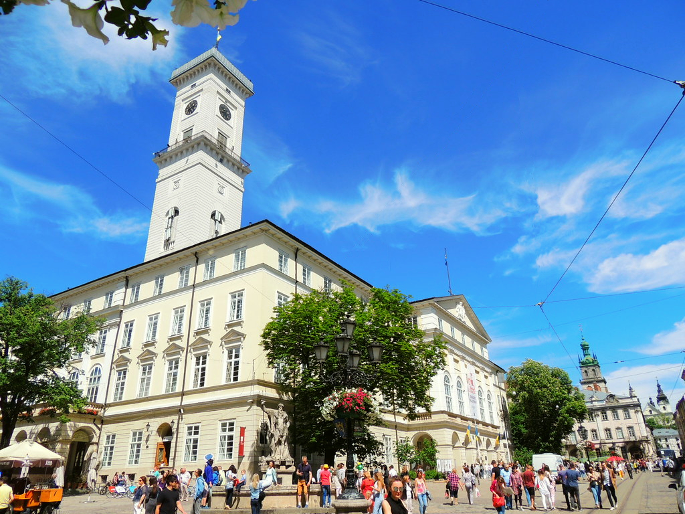
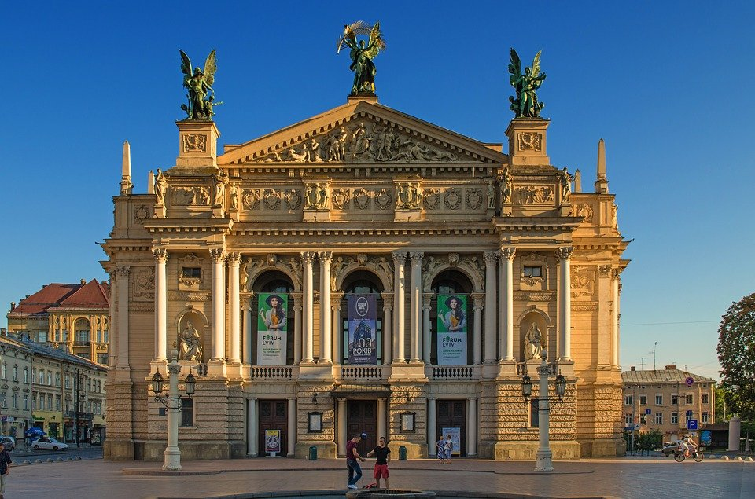
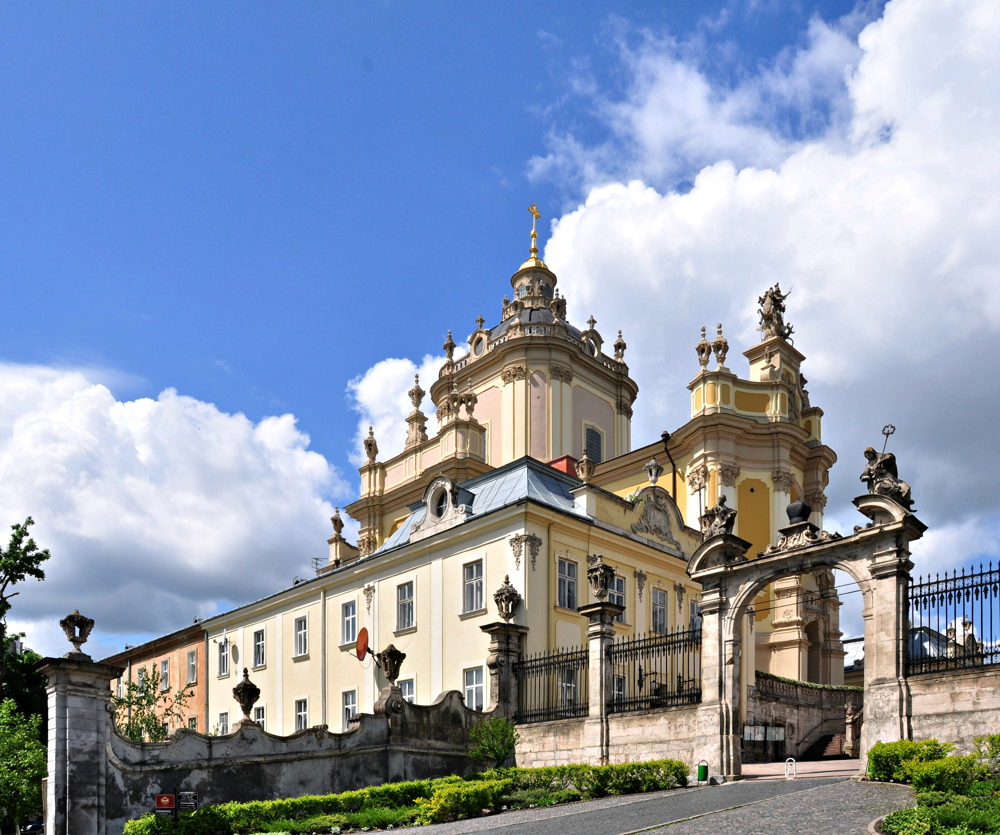
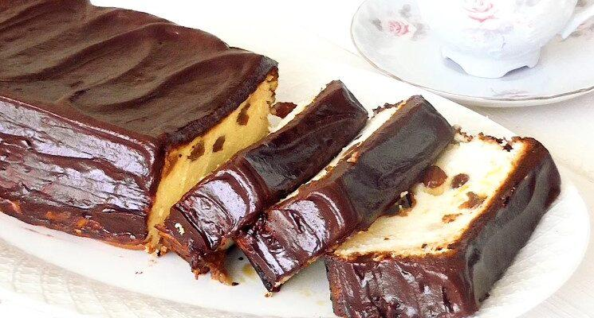
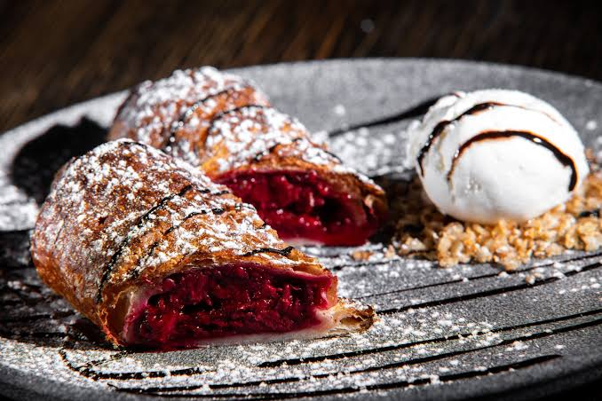
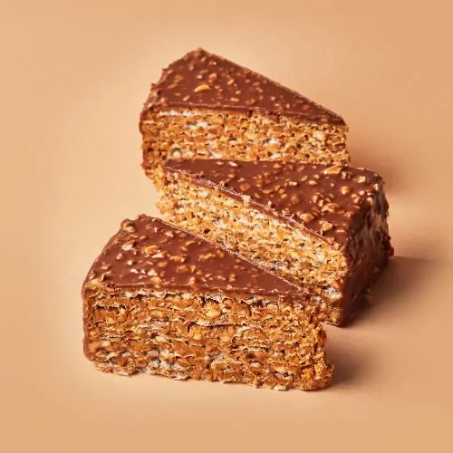
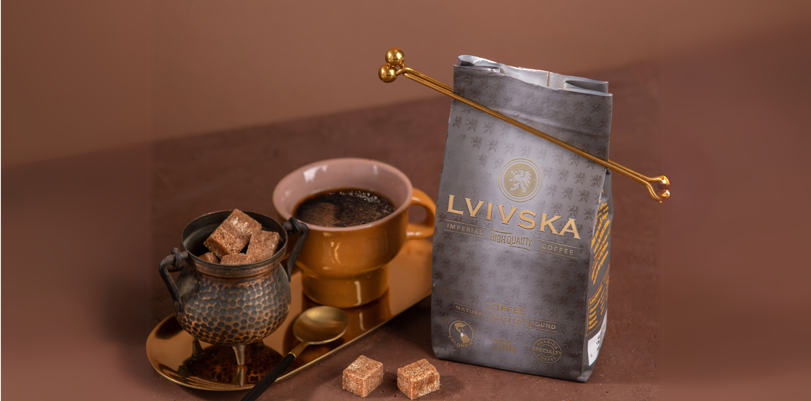
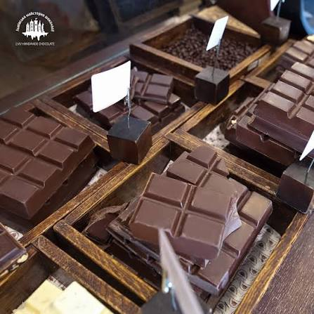
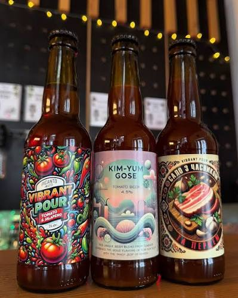
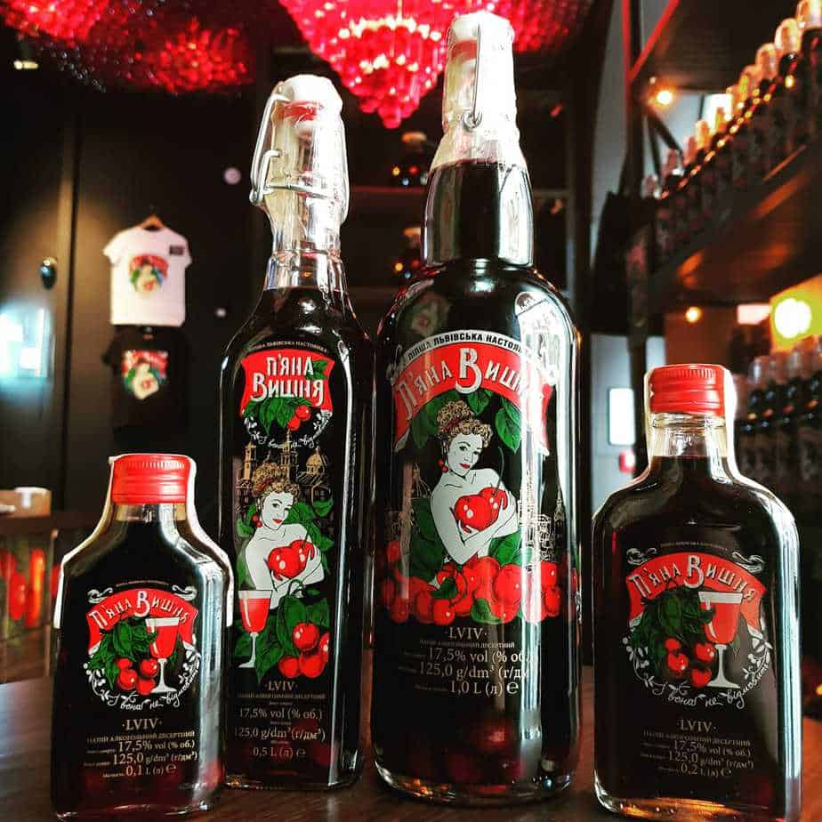

Визначні пам'ятки Львова
Визначні пам'ятки Львова — це унікальний ансамбль історії та архітектури, внесений до Спадщини ЮНЕСКО.
Площа ринок та ратуша

Площа Ринок та Ратуша — серце старого міста, оточене 44 старовинними кам'яницями, з оглядового майданчика вежі якого відкривається панорамний вид на дахи Львова.
Оперний театр імені Соломії Крушельницької

Оперний театр імені Соломії Крушельницької — архітектурна перлина у стилі неоренесансу та бароко, що вражає пишним фасадом і розкішним внутрішнім оздобленням.
Високий Замок

Високий Замок — найвища точка міста, звідки відкривається найкраща широка панорама на старовинний та сучасний Львів.
Собор Святого Юра

Собор Святого Юра — величавий бароковий комплекс, який слугує головним греко-католицьким храмом міста.
Кухня та гасторономія Львову
Кухня та гастрономія Львова — це яскравий калейдоскоп українських, австрійських, польських та вірменських кулінарних традицій. Місто славиться своєю культурою затишних кнайп, де подають легендарний львівський сирник, духмяний штрудель та насичений андрути. Особливе місце посідають кава та шоколад, перетворені місцевими майстрами на справжнє мистецтво, а також багата традиція крафтового пивоваріння й настоянок.
Львівський сирник

Львівський сирник — це ніжний десерт із жирного домашнього сиру, покритий шоколадною глазур'ю. Завдяки додаванню вишень, родзинок чи цукатів та легендарній рецептурі Дарії Цвєк він став справжньою візитівкою галицької кухні.
Штруделі

Яблучний та вишневий штрудели — це класика львівських кав'ярень, яка дісталася місту в спадок від Австро-Угорщини. Ідеальний штрудель вирізняється найтоншим хрустким тістом, багатою начинкою та обов'язково подається теплим із кулькою ванільного морозива чи соусом.
Андрути

Андрути — витончений львівський вафельний торт, без якого колись не обходилося жодне міське свято. Хрусткі коржі перемащують ніжним кремом на основі згущеного молока, масло-какао, горіхів чи джему, створюючи ностальгійний смак дитинства.
Львівська кава

Львівська кава — це не просто напій, а цілий культурний ритуал із багатовіковою історією. Вона славиться своєю міцністю, багатим ароматом та унікальними традиціями подачі, від класичного запарювання в джезві до видовищного «запалювання» кави.
Львівський шоколад

Львівський шоколад — це справжнє кондитерське мистецтво, яке перетворило місто на шоколадну столицю України. Місцеві майстри створюють із нього різноманітні цукерки ручної роботи, фігурки та гарячі напої, комбінуючи традиційні рецепти з незвичними спеціями й горіхами.
Львівське крафтове пиво

Львівське крафтове пиво поєднує давні броварські традиції з сміливими сучасними експериментами. Місцеві крафтові броварні дивують цінителів як класичними елями чи лагерами, так і незвичними сортами з додаванням локальних ягід, хвойних хвоєк чи спецій.
Львівські настоянки

Львівські настоянки та спотикачі — це міцні авторські напої, настояні на натуральних ягодах, травах, коріннях та меду. Вони завоювали популярність завдяки багатій палітрі смаків — від солодкого вишняка до пікантної медовухи з перцем — та особливій атмосфері львівських кнайп.
Культура та традиції Львова
Культура та традиції Львова сформувалися під впливом перетину багатьох європейських народів, що подарувало місту унікальний бароково-галицький шарм. Тут особливе значення мають релігійні й родинні свята: Різдво з його масштабною Ходою дидахів та вуличними вертепами, а також Великдень із гаївками біля старовинних храмів. Окремою традицією є повільний міський ритм — «поволі-поволі», де щоденний ритуал пиття кави та теплих бесіди у кнайпах вважається мистецтвом жити.
Особисті враження
Ви тільки уявіть собі цей момент: ви повертаєте з гамірної вулиці в один із тихих львівських двориків, де час ніби зупиняється, а на старих дерев'яних балконах цвітуть герані. Краса Львова — вона не музейна, вона жива, затишна і надзвичайно чуттєва.